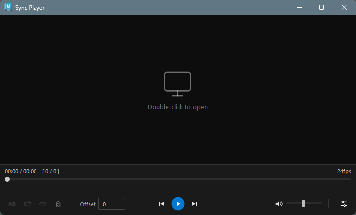
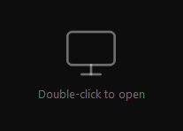
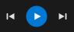
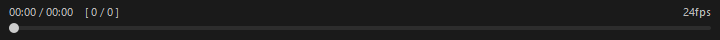
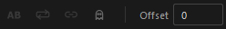
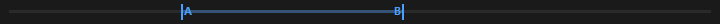
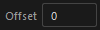

Sync Player
概要
Sync Player は、Maya 内でビデオファイルを再生するためのツールです。通常のビデオプレイヤーとして使用できるほか、Maya タイムラインとの同期機能を搭載しており、リファレンス映像を確認しながらアニメーション作業を行うことができます。
対応フォーマット
mov, avi, mp4, wmv, jpeg, png, tif/tiff
起動方法
専用のメニューか、以下のコマンドでツールを起動します。
import faketools.tools.common.sync_player.ui
faketools.tools.common.sync_player.ui.show_ui()
UI 構成
ウィンドウは以下の要素で構成されています。
| 領域 | 説明 |
|---|---|
| ビデオ表示エリア | ビデオの映像が表示される領域。未読み込み時はプレースホルダーが表示される |
| 時間/フレーム表示 | 現在の再生位置と総時間、フレーム番号を表示 |
| FPS 表示 | 読み込んだビデオのフレームレートを表示 |
| シークバー | 再生位置を操作するスライダー |
| A-B ループバー | A-B ループの範囲を視覚的に表示・調整するバー |
| コントロールバー | 再生操作、各種設定のボタン群 |
基本的な使い方
ビデオの読み込み

ビデオの読み込みには以下の三つのタイプがありそれぞれ読み込み方が異なります。
- 動画モード
- 動画画像シーケンスモード
- 画像シーケンスモード
それぞれのモードの使用方法や特徴は以下の通りです。
動画モード
- オプションメニューの
Image Sequence Modeをオフにします。 - 中央のビデオ読み込みエリアでダブルクリックします。
- 開いたダイアログから動画フォーマットのファイルを選択してください。
このモードはそのまま動画を再生します。唯一音声ありのモードです。
動画画像シーケンスモード
- オプションメニューの
Image Sequence Modeをオンにします。 - 中央のビデオ読み込みエリアでダブルクリックします。
- 開いたダイアログから動画フォーマットのファイルを選択してください。
このモードは動画を一度画像シーケンスに変換してから読み込みます。 RDP や ネットワークドライブの関係で動画再生のレスポンスが悪い場合に使用します。
Note: このモードには ffmpeg が必要です。ffmpeg がシステムの PATH に含まれていない場合、エラーメッセージが表示されます。
画像シーケンスモード
- オプションメニューの
Image Sequence Modeをオンにします。 - 中央のビデオ読み込みエリアでダブルクリックします。
- 開いたダイアログから画像フォーマットのファイルを選択してください。
このモードは選択した画像のディレクトリからそのファイルに紐づく連番画像を収集し動画として読み込みます。
RDP や
ネットワークドライブの関係で動画再生のレスポンスが悪い場合に使用します。
Note: Maya Sync が有効な場合、ダブルクリックによるファイル読み込みは無効になります。
再生コントロール

コントロールバー中央のボタンで再生操作を行います。
| ボタン | 説明 |
|---|---|
| 前のフレーム | 1フレーム戻る |
| 再生 / 一時停止 | 再生と一時停止を切り替え |
| 次のフレーム | 1フレーム進む |
シークバー

シークバーをドラッグして、任意の再生位置にジャンプできます。
- 一時停止中にシークバーをドラッグすると、ドラッグ中は内部的に再生状態になり映像が更新されます。ドラッグを離すと一時停止状態に戻ります。
時間/フレーム表示
シークバーの上に現在の再生情報が表示されます。
MM:SS / MM:SS [ 現在フレーム / 総フレーム数 ]A-B ループが有効な場合は、右側にループ範囲の時間とフレーム番号が追加表示されます。
MM:SS / MM:SS [ 現在フレーム / 総フレーム数 ] A-B: MM:SS - MM:SS [ 開始フレーム - 終了フレーム ]コントロールバー

A-B ループ
ボタンをクリックすると、A-B ループ機能が有効になります。
A-B ループがオンの場合は、ボタンアイコンが に変更されます。
A-B ループの動作

- A-B ループを有効にすると、初期値としてビデオ全体の範囲（先頭〜末尾）が設定されます
- シークバーの下に表示される A-B ループバー で、A（開始）マーカーと B（終了）マーカーをドラッグして範囲を調整できます
- ループ再生と併用すると、指定した A-B 範囲内でループ再生されます
- A-B ループを無効にすると、範囲設定がクリアされます
Note: Maya Sync が有効な場合、A-B ループは無効になります。
ループ再生
 ボタンをクリックすると、ビデオの終端に達した際に自動的に先頭から再生を繰り返します。
ボタンをクリックすると、ビデオの終端に達した際に自動的に先頭から再生を繰り返します。
ループがオンの場合は、ボタンアイコンが、 に変更されます。
に変更されます。
ウィンドウ透過
ボタンをクリックすると、ウィンドウ全体（ビデオ映像とコントロール）が半透明になります。Maya ビューポートの上にウィンドウを重ねてリファレンス映像を確認しながら作業する際に便利です。
透過がオンの場合は、ボタンアイコンが に変更されます。
- 不透明度のプリセット値はオプションメニューの Opacity スライダーで 10%〜100% の範囲で調整できます
- 透過がオンの間、スライダーで値を変更すると即座に反映されます
- 起動時は常に不透明（透過オフ）の状態です
Maya Sync（タイムライン同期）
 ボタンをクリックすると、Maya
タイムラインとの同期モードが有効になります。
ボタンをクリックすると、Maya
タイムラインとの同期モードが有効になります。
Sync がオンの場合は、ボタンアイコンが、 に変更されます。
同期モードの動作
- 同期有効時: ビデオの再生位置が Maya
のタイムラインに連動します
- Maya のフレームが変化するたびに、ビデオが対応する位置にシークします
- タイムラインのスクラブ（ドラッグ）や再生のどちらでも同様に動作します
- 同期無効時: 通常のビデオプレイヤーとして独立して動作します
フレームオフセット

コントロールバー左側の Offset 欄で、Maya タイムラインとビデオの同期位置にフレーム単位のオフセットを設定できます。
たとえば、ビデオの冒頭に不要なフレームがある場合や、Maya のタイムラインの開始フレームとビデオの開始位置を調整したい場合に使用します。
同期中のコントロール制限
同期モードが有効な間は、以下のコントロールが無効になります。
- 再生 / 一時停止ボタン
- フレーム送り / 戻しボタン
- A-B ループの切り替え
- ループ再生の切り替え
- シークバーの操作
これは、ビデオの再生が Maya のタイムラインに完全に制御されるためです。
FPS の不一致に関する警告
同期を有効にした際、ビデオの FPS と Maya シーンの FPS が異なる場合、警告メッセージが表示されます。FPS が異なると、フレーム送りやフレーム番号の表示がビデオの実際のフレームと一致しない場合があります。
音量コントロール

右側にミュートボタンと音量スライダーがあります。
| コントロール | 説明 |
|---|---|
| ミュートボタン | 音声のオン/オフを切り替え |
| 音量スライダー | 音量を 0〜100 の範囲で調整 |
オプションメニュー
音量スライダーの右にある ボタンをクリックすると、メニューが表示されます。
画像シーケンスモードの切り替え
Image Sequence Mode チェックボックスで動画の読み込み方を選択します。
再生速度
Speed サブメニューから再生速度を選択できます。
| 速度 | 説明 |
|---|---|
| 0.25x | 4分の1速度 |
| 0.5x | 半分の速度 |
| 0.75x | 4分の3速度 |
| 1.0x | 通常速度（デフォルト） |
| 1.25x | 1.25倍速 |
| 1.5x | 1.5倍速 |
| 2.0x | 2倍速 |
不透明度
Opacity スライダーでウィンドウ透過のプリセット値を調整できます。範囲は 10%〜100% です。透過がオンの状態でスライダーを操作すると、リアルタイムにウィンドウの不透明度が変化します。
キーボードショートカット
| キー | 説明 |
|---|---|
| Space | 再生 / 一時停止の切り替え |
| Right / Up | 次のフレームに進む |
| Left / Down | 前のフレームに戻る |
| Ctrl+T | ウィンドウ透過の切り替え |
| Ctrl+Up | 不透明度プリセット値を +10% |
| Ctrl+Down | 不透明度プリセット値を -10% |
| Ctrl+0 | 不透明度を 100% にリセットし透過をオフ |
Note: Maya Sync が有効な場合、キーボードショートカットは無効になります。ただし、透過関連のショートカット（Ctrl+T / Ctrl+Up / Ctrl+Down / Ctrl+0）は Sync 中でも使用できます。
設定の保存
ウィンドウを閉じる際、以下の設定が自動的に保存され、次回起動時に復元されます。
- 音量
- ミュート状態
- フレームオフセット
- 再生速度
- 不透明度プリセット値
対応フォーマットの拡張
Sync Player は Qt の QMediaPlayer を使用しており、再生可能なフォーマットは OS のメディアバックエンドに依存します。
Windows
Windows では Windows Media Foundation (WMF) がバックエンドとして使用されます。標準で mp4 (H.264)、wmv、avi などに対応していますが、追加のコーデックをインストールすることで対応フォーマットを増やすことができます。
| コーデックパック | 説明 |
|---|---|
| K-Lite Codec Pack | 幅広いフォーマットに対応する定番コーデックパック。Basic 版で十分です |
| LAV Filters | FFmpeg ベースの DirectShow フィルター。K-Lite にも同梱されています |
コーデックパックをインストールすると、WebM (VP9)、MKV、HEVC (H.265) など、標準では再生できないフォーマットも WMF 経由で再生可能になります。
Note: コーデックパックのインストール後、Maya の再起動が必要です。
注意事項
- ビデオの読み込みには Windows Media Foundation (WMF) バックエンドが使用されます。まれにバックエンドが応答しなくなる場合がありますが、ツールが自動的にプレイヤーを再作成してリトライします
- ビデオの読み込みが 10 秒以内に完了しない場合、タイムアウトとなりプレースホルダー画面に戻ります